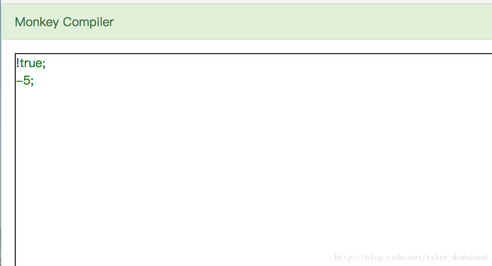
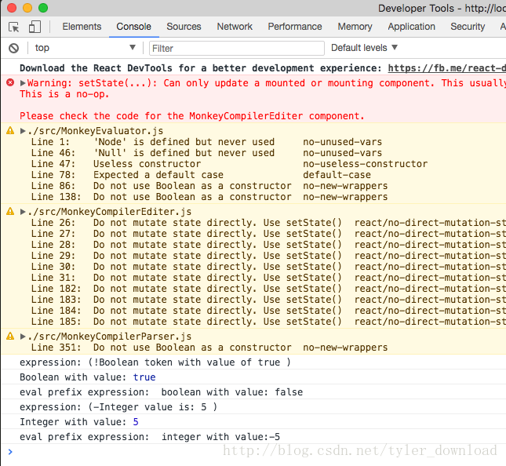

前几节，我们介绍了如何使用语法解析算法对代码进行解析。语法解析的目的是为了明白代码语句的意图，例如对于语句: c = a + b; 语法解析后，编译器就明白代码是想把变量a和b的值相加，再把结果赋值给变量c.然而要想实现这样的结果，编译器还得需要不少辅助信息，例如变量a和b对应的数值是多少，这些辅助信息我们会存储在一种称之为符号表的数据结构中。
在前几节语法解析时，代码实际上建造了一种树形结构，例如语句 a+b; 其中包含三个元素，a和b属于Identifier, 三者构成了一个算术表达式，也就是expression, 这就相当于构建了一颗三叉树，树的节点就是expression, 叶子节点就是两个Identifier和加号。在进行语句执行时，编译器会遍历这样的多叉树，然后执行相应的动作，把动作执行后的结果存储在对应的符号表里。例如编译器遍历了语句a+b对应的多叉树后，会从符号表中找到变量a,b对应的数值，根据读取到的符号”+”,它会做一个加法，把结果存储到变量c对应的符号表中，接下来我们先看看符号表结构，我们先看看整型和布尔型变量对应的符号是怎么定义的。
在本地目录新建一个文件叫MonkeyEvaluator.js, 添加如下代码：
class BaseObject {
constructor (props) {
this.INTEGER_OBJ = "INTEGER"
this.BOOLEAN_OBJ = "BOOLEAN"
this.NULL_OBJ = "NULL"
}
type() {return null}
inspect() {return null}
}
class Integer extends BaseObject {
constructor(props) {
super(props)
this.value = props.value
}
inspect () {
return "" + this.value
}
type () {
return this.INTEGER_OBJ
}
}
class Boolean extends BaseObject {
constructor (props) {
super(props)
this.value = props.value
}
type () {
return this.BOOLEAN_OBJ
}
inspect () {
return "" + this.value
}
}
class Null extends BaseObject {
constructor (props) {
super(props)
}
type () {
return this.NULL_OBJ
}
inspect () {
return "null"
}
}
上面代码定义了符号表中应对不同数据类型的符号，BaseObject是所有符号对象的父类，它定义所有符号对象必须导出的接口，其中type接口返回符号对应的数据类型，inspect接口打印符号对象的内容。在BaseObject的构造函数中，它定义了当前符号对象的类型，分别是整形，布尔型和NULL。
接下来的Integer, Boolean, 和 Null 分别继承自BaseObject, 他们分别用于记录数据类型为整形，布尔型和Null型变量的辅助信息，其中前两者都含有一个value域，它用来存储变量对应的数值。接着我们将实现一个能够遍历语法解析树的类，它将遍历每个节点，同时执行相应动作，我们先回到MonkeyCompilerParser.js,为每个节点增加一个类型信息，例如：
class ExpressionStatement extends Statement {
constructor(props) {
super(props)
this.token = props.token
this.expression = props.expression
var s = "expression: " + this.expression.getLiteral()
this.tokenLiteral = s
this.type = "ExpressionStatement"
}
}
...
class IntegerLiteral extends Expression {
constructor(props) {
super(props)
this.token = props.token
this.value = props.value
var s = "Integer value is: " + this.token.getLiteral()
this.tokenLiteral = s
// change here
this.type = "Integer"
}
}
//change here
class Boolean extends Expression {
constructor(props) {
super(props)
this.token = props.token
this.value = props.value
var s = "Boolean token with value of " + this.value
this.tokenLiteral = s
//change here
this.type = "Boolean"
}
}
...我们增加的type值域就是用来标明当前节点的类型。回忆前几节我们详细研究的语法解析流程，对于如下代码：
5;语法解析器会先调用parseExpressionStatement()来执行解析，在该函数里，它会根据调用表，调用parseExpression()接口来执行解析，后者会调用parseIntegerLiteral()接口，在该函数中，它把字符”5”转换成数字5，然后创建一个IntegerLiteral对象，把数字5存储在里面，这个对象会返回到parseExpressionStatement(),这个函数会构造一个ExpressionStatement对象，然后再把IntegerLiteral对象存储其中。根据上面代码的定义，IntegeLiteral对象会存储在ExpressionStatment对象的expression值域中。
于是解析过程就构造了一个语法树节点，它的结构是这样：ExpressionStatement -> IntegerLiteral。于是变量这个节点时，我们需要先访问ExpressionStatement,然后从它的expression值域中取出IntegerLiteral对象，再从后者的value域中读取对应的数值。根据这个逻辑，我们编写语法执行器的代码如下：
class MonkeyEvaluator {
eval (node) {
var props = {}
switch (node.type) {
case "Integer":
console.log("Integer with value:", node.value)
props.value = node.value
return new Integer(props)
case "Boolean":
props.value = node.value
console.log("Boolean with value:", node.value)
return new Boolean(props)
case "ExpressionStatement":
return this.eval(node.expression)
}
return null
}
}eval 函数负责变量语法树节点，并根据节点信息执行相应动作。当它遍历的节点类型是ExpressionStatment时，它知道需要继续解析它的expression域，于是它递归调用eval函数，传入该对象的expression域，eval再次被调用是，传进来的就是IntegerLiteral对象，它的type域对应的就是”Integer”,于是代码读取它存储的数值5，然后创建一个Integer符号对象，把数值5存在里面。我们对boolean类型的解析逻辑跟整形的解析逻辑是一样的。
接着，我们看看更复杂的表达式对应的节点如何解释执行。对于表达式:!true, -5, 他们就是我们前面几节所描述的前缀表达式，我们先看看前缀表达式对应的节点对象：
class PrefixExpression extends Expression {
constructor(props) {
super(props)
this.token = props.token
this.operator = props.operator
this.right = props.expression
var s = "(" + this.operator + this.right.getLiteral() + " )"
this.tokenLiteral = s
this.type = "PrefixExpression"
}
}其中的operator 代表着表达式前面的操作符，而right代表操作符后面的表达式，因此我们在解析前缀表达式节点时，需要先解析它的right对象，然后再根据不同的操作符采取不同的动作，因此相应代码如下：
class MonkeyEvaluator {
eval (node) {
var props = {}
switch (node.type) {
....
case "PrefixExpression":
var right = this.eval(node.right)
if (this.isError(right)) {
return right
}
var obj = this.evalPrefixExpression(node.operator, right)
console.log("eval prefix expression: ", obj.inspect())
return obj
}
return null
}
evalPrefixExpression(operator, right) {
switch (operator) {
case "!":
return this.evalBangOperatorExpression(right)
case "-":
return this.evalMinusPrefixOperatorExpression(right)
default:
return this.newError("unknown operator:", operator, right.type())
}
}
isError (obj) {
if (obj !== null) {
return obj.type() === obj.ERROR_OBJ
}
return false
}
evalBangOperatorExpression(right) {
var props = {}
if (right.type() === right.BOOLEAN_OBJ) {
if (right.value === true) {
props.value = false
}
if (right.value === false) {
props.value = true
}
}
if (right.type() === right.NULL_OBJ) {
props.value = true
}
return new Boolean(props)
}
evalMinusPrefixOperatorExpression(right) {
if (right.type() !== right.INTEGER_OBJ) {
return this.newError("unknown operaotr:- ", right.type())
}
var props = {}
props.value = -right.value
return new Integer(props)
}
newError(msg, type) {
var props = {}
props.errMsg = msg + type
return new Error(props)
}
从上面代码看出，在解析前缀表达式节点时，解析函数eval会先对节点的right值域进行解释执行，创建相应的符号对象，然后调用evalPrefixExpression()，在该函数中，它会根据节点的operator内容进行相应的处理。如果操作符是”!”,那么它调用evalBangOperatorExpression(),在这个函数里，它会对right解析后返回来的符号对象里面的value取反，如果操作符是”-“, 函数调用evalMinusPrefixOperatorExpression(),它会将right解析后返回的符号对象里的value做取负操作，如果操作符不属于这两种情况，那么代码返回错误信息。
完成了节点的解释执行流程，我们需要触发这个流程，于是打开MonkeyCompilerIDE.js,添加如下代码：
onLexingClick () {
this.lexer = new MonkeyLexer(this.inputInstance.getContent())
this.parser = new MonkeyCompilerParser(this.lexer)
this.parser.parseProgram()
this.program = this.parser.program
for (var i = 0; i < this.program.statements.length; i++) {
console.log(this.program.statements[i].getLiteral())
//change here
this.evaluator.eval(this.program.statements[i])
}
}上面代码执行后情况如下，在编辑框里输入如下语句：

点击底下的parser按钮，代码会被语法进行，然后进入语法树节点的解析执行流程，代码运行后结果如下：

表达式”!true”，它的值被解析成false, “-5”它的值被解析成整形-5，因此我们代码就能成功的执行了语句”!true”和”-5”。
在后续的章节中，我们将详细研究后续表达式，例如a+b, a*(b+c);这类代码的解析执行，他们的处理过程要比本节前序表达式的处理过程复杂的多，我们也将使用一一拆解，分而治之的方式将难点分解，将难度降低，以便大家的掌握和理解。
更多技术信息，包括操作系统，编译器，面试算法，机器学习，人工智能，请关照我的公众号：